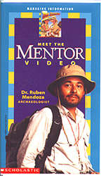
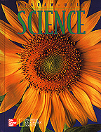

Home
| Teaching for Tomorrow, Today |
Professor
Ruben G. Mendoza
Institute
of Archaeological Science, Technology, and Visualization
CSU
Monterey Bay
 |
 |  |
Professor Ruben G. Mendoza is a founding faculty member of the California State University, Monterey Bay, and Professor in the Social and Behavioral Sciences Center. As founding Director of the Institute for Archaeological Science, Technology, and Visualization, he has worked to build an institute devoted to the digital visualization of archaeological sites and data.
A California native, Dr. Mendoza completed his BA degree at the California State University, Bakersfield (1978), and his MA (1980) and PhD (1992) degrees at the University of Arizona, Tucson. Trained as an archaeologist with a Mesoamerican archaeology emphasis, he has long studied and published on the archaeology and ethnohistory of Mesoamerica and Peru for the purposes of tracing the history of science and technology in ancient America and within other non-Western contexts. He has presented professional papers and talks before groups throughout the US, Europe, and Mexico, and his archaeological fieldwork and related investigations encompass both Mesoamerica and North America.
His fieldwork includes collaborative ventures in the excavation and mapping of the main pyramid complex at Cholula, Mexico, as well as excavation of the 16th century Ex-convento de la Concepcion, Puebla, Mexico; the civic-ceremonial complex of Cañada de la Virgen, Guanajuato, Mexico; and long-term academic fieldwork efforts at the Crescent Rock Shelter of Colorado; and most recently, Mission San Juan Bautista, California, as principal investigator.
His
publications have been featured in Antiquity, World Archaeology,
American
Antiquity, Journal de la Societe des Americanistes,
Handbook
of Hispanic Cultures in the United States, America's Historic Sites,
Oxford
Encyclopedia of Mesoamerican Cultures, Encyclopedia of North American
History, Encyclopedia of the Ancient World, and in the Encyclopaedia
of the History of Science, Technology, and Medicine in Non-Western Cultures.
Recent works include chapters in Cultural Diversity in the United States:
A Critical Reader (2001),
U.S. Latino Literatures and Cultures:
Transnational Perspectives (2000), and Emerging Technologies in
Teaching Languages and Cultures (2001). His forthcoming works
include a book chapter in Kluwer's (2002) Medicine Across Cultures:
A History of Non-Western Medicine and contributions to a host of reference
works including Latinas in the United States: An Historical Encyclopedia,
McGill's
Guide to Military History, and Weapons of War.